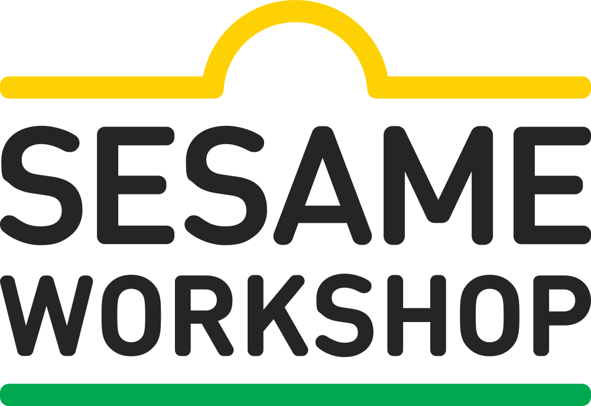

REDspace + Sesame Workshop / Sesame Central
Sesame Workshop needed a logged-in site where partners, vendors, licensees, agencies, creators, and internal teams could understand the brand and access the right materials.
I led UX through discovery, information architecture, wireframes, and product definition for Sesame Central: a brand site that had to teach, guide, and connect users to usable assets without becoming another file repository.

The existing materials held a lot of value, but the experience around them was fragmented. LetterA worked as an asset database, not as a guided place to understand what an asset meant or how it should be used.
The new site needed to bring brand guidance, character context, cultural principles, and asset access into one flow. The harder part was deciding when to teach, when to browse, and when to make the shortest path obvious.
I planned and led discovery around audiences, content, information architecture, technical constraints, and brand direction. The work started with a simple question: what does each type of partner actually need to do here?
From there, I translated the findings into audience profiles, journey thinking, content structures, wireframes, and UX documentation that gave design, engineering, and the client a shared model for the site.
Logged-in access, partner onboarding, Workshop and Sesame Street brand guidance, character content, downloadable resources, NetX/LetterA paths, asset search, analytics, and CMS editing patterns.
A new partner might need to understand Sesame Workshop's mission before making anything. A returning designer might need logo rules, a character bio, or a usable file right away. An internal team might need to onboard someone else.
That meant the IA could not depend on one ideal path. The structure had to support learning, browsing, directed resource access, and repeat use without turning every visit into a long orientation.
Sesame Central had to keep growing after launch: new shows, new guidance, new resource sets, new character pages, and changing asset collections. That made the authoring model a UX problem, not just an implementation detail.
The wireframes and documentation treated WordPress blocks as reusable content tools. Editors needed patterns for regions, introductions, facts, calls to action, cards, quotes, clips, and resource modules so the site could expand without losing consistency.
The product had to teach enough context before sending people into the asset library.
The goal was not to replace NetX or LetterA. It was to create a better front door: give users enough context to understand a character, campaign, guide, or brand rule, then send them toward a curated asset path with intent.
That created practical UX questions around permissions, authentication, search, thumbnails, curated collections, and deep links. The site needed to feel seamless even when the underlying systems were doing different jobs.
The work framed Sesame Central as a B2B service for brand education and asset access: stable enough for evergreen guidance, flexible enough for new IP and seasonal material, and practical enough for people working under real deadlines.